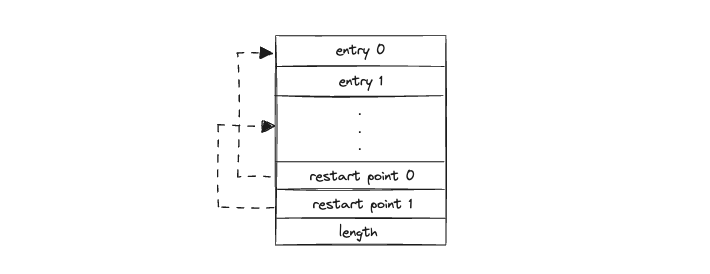
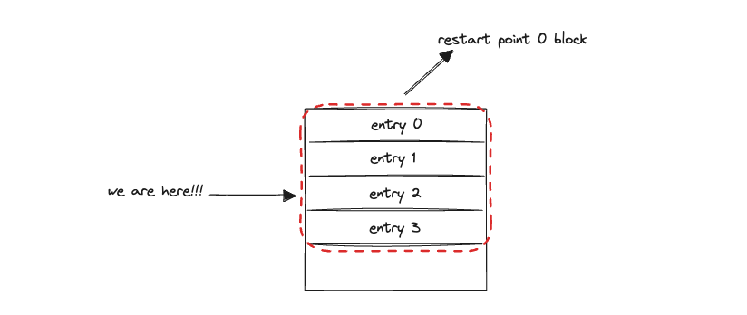
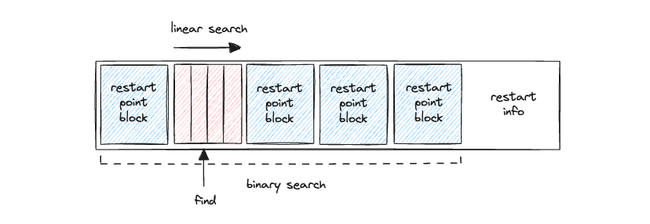
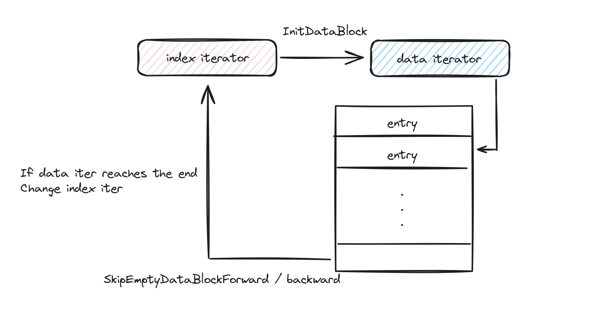
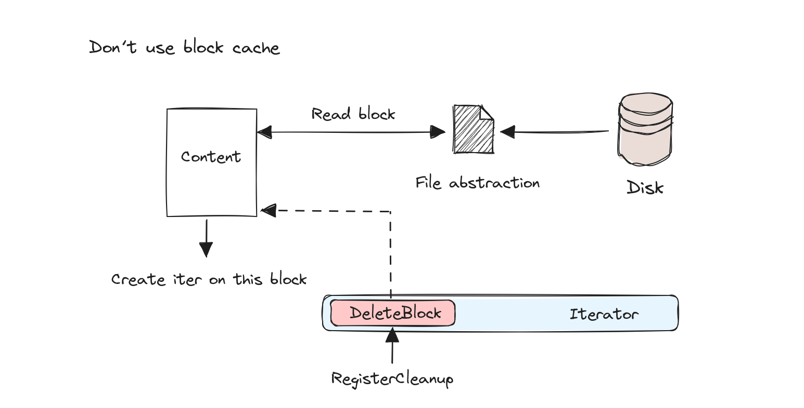
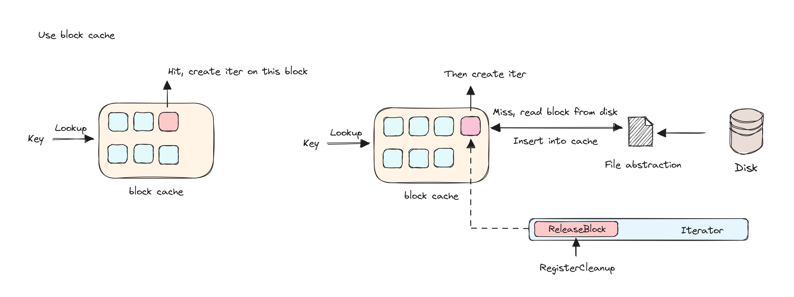

Understanding LevelDB Iterator
Intro
Understanding Iterators
Before diving into the specifics of LevelDB, let's clarify what an iterator is in the context of programming. An iterator is an object that enables users to traverse a container, particularly lists and arrays, without exposing the underlying structure of the data. Iterators are fundamental for accessing the elements of a data structure sequentially, without needing to understand how the structure organizes its elements internally.
Why LevelDB Uses Iterators
LevelDB, a fast key-value storage library written by Google, employs iterators extensively. The design of LevelDB is such that it stores data in sorted order using an efficient disk-based data structure inspired by Log-Structured Merge-trees (LSM trees). This sorted arrangement makes it essential to have a robust system for traversing the data entries efficiently — hence, the use of iterators.
Iterators in LevelDB are crucial for several reasons:
- Efficient Data Retrieval: They allow the application to access stored data in a sorted manner without loading the entire data set into memory. This is particularly beneficial for large data sets that do not fit entirely in RAM.
- Abstraction: LevelDB iterators abstract the complexity of the underlying data structure. The user of the library does not need to know about the internals of the SSTables (Sorted String Tables) or the memtables. Instead, they interact with a clean, simple API that the iterator provides.
In the following sections, we will explore how LevelDB implements its iterator interface, the functionalities it supports, and how iterators in LevelDB organized. The content below represents my personal understanding of the LevelDB iterator, so it may contain some flaws or misunderstandings. If you find any, please contact me through any social media platform. I'm very happy to discuss about it.
Usage of the API
In LevelDB, the iterator is a powerful tool for traversing all the data within the database. From a user's perspective, APIs should be straightforward and user-friendly. Naturally, before delving deeper into how something works, it's essential to learn how to use it. Below, I outline some basic scenarios in which the LevelDB iterator can be utilized.
Creating and Using an Iterator
To create an iterator in LevelDB, call the NewIterator
method. This process is akin to how iterators are used in C++ to scan
through data:
leveldb::Iterator* it = db->NewIterator(leveldb::ReadOptions());
for (it->SeekToFirst(); it->Valid(); it->Next()) {
cout << it->key().ToString() << ": " << it->value().ToString() << endl;
}
assert(it->status().ok()); // Check for any errors found during the scan
delete it;Starting From a Specific Point
It is also possible to initiate the iterator at a specific starting point in the database:
for (it->Seek(start);
it->Valid() && it->key().ToString() < limit;
it->Next()) {
// Perform actions with each entry
}Reverse Scanning
Furthermore, LevelDB's iterator can scan the data in reverse, starting from the last entry and moving to the first:
for (it->SeekToLast(); it->Valid(); it->Prev()) {
// Actions to be performed on each entry
}High level Overview
Let's see how excatly iterator abstractions are orgnized in LevelDB source code.
#TODO
Iterator Abstraction
Iterator is a base class for many iterators within LevelDB. It
provides a general interface that users can utilize. Basic access
methods such as Seek(), Valid(),
SeekToFirst(), SeekToLast(),
Next(), Prev(), Key(), and
Value() are provided. These are all pure virtual functions
which need to be implemented in the inheriting class.
One more thing about this base class is that it allows higher-level code to register a cleanup function that will be invoked when an iterator is destroyed.
Three Basic Iterator - Memtable Iterator
Memtable iterator is built on top of iterator abstraction, it's an encapsulation of SkipList iterator.
class MemTableIterator : public Iterator {
public:
explicit MemTableIterator(MemTable::Table* table) : iter_(table) {}
MemTableIterator(const MemTableIterator&) = delete;
MemTableIterator& operator=(const MemTableIterator&) = delete;
~MemTableIterator() override = default;
bool Valid() const override { return iter_.Valid(); }
void Seek(const Slice& k) override { iter_.Seek(EncodeKey(&tmp_, k)); }
void SeekToFirst() override { iter_.SeekToFirst(); }
void SeekToLast() override { iter_.SeekToLast(); }
void Next() override { iter_.Next(); }
void Prev() override { iter_.Prev(); }
Slice key() const override { return GetLengthPrefixedSlice(iter_.key()); }
Slice value() const override {
Slice key_slice = GetLengthPrefixedSlice(iter_.key());
return GetLengthPrefixedSlice(key_slice.data() + key_slice.size());
}
Status status() const override { return Status::OK(); }
private:
MemTable::Table::Iterator iter_;
std::string tmp_; // For passing to EncodeKey
};Three Basic Iterator - Block Iterator
The Block iterator is implemented in block.cc and
inherits from the Iterator abstraction. The essence of this class lies
in overriding all the virtual functions of the Iterator. To comprehend
how the iterator calculates, it's essential first to understand how data
blocks are organized. The image below depicts the layout of a data
block.

As illustrated, a restart point stores the offset of an actual data entry (you can also think of it as a pointer pointing to a data entry). The length records how many restart points this data block contains.
In the implementation of the block iterator, there are some key meta-information pieces that we should pay attention to:
class Block::Iter : public Iterator {
private:
const Comparator* const comparator_;
const char* const data_; // underlying block contents
uint32_t const restarts_; // Offset of restart array (list of fixed32)
uint32_t const num_restarts_; // Number of uint32_t entries in restart array
// current_ is the offset in data_ of the current entry. >= restarts_ if !Valid
uint32_t current_;
uint32_t restart_index_; // Index of restart block in which current_ falls
std::string key_;
Slice value_;
Status status_;
// other code ....
}data_ points to the beginning of the block as shown
above. restarts_ points to the beginning of the restart
points. num_restarts_ equals the length.
current_ and restart_index_ help us navigate
within the data block. The following function is quite important:
uint32_t GetRestartPoint(uint32_t index) {
assert(index < num_restarts_);
return DecodeFixed32(data_ + restarts_ + index * sizeof(uint32_t));
}The input parameter index indicates the ith restart
point. In this function, we perform some simple offset calculation and
decode the data entry offset, then return it. With this function, we can
now jump to any restart point we desire within this data block.
Navigating with Prev() and Next()
In Next(), the function calls
ParseNextKey(). This includes some shared or non-shared
elements, which we don't discuss in this blog; we can simply consider it
as an entry to help us focus on the iterator implementation. The idea
behind this function is straightforward. We first calculate the next
data entry address. If it's beyond the data entry limit, return false.
Otherwise, decode this entry, set the value and key, and update the
restart_index when necessary (e.g., assume the current data entry is the
end of restart point 0 block; when we call
NextEntryOffset(), the current data entry is in restart
point 1 field now, so we need to update the restart index too).
void Next() override {
assert(Valid());
ParseNextKey();
}
bool ParseNextKey() {
current_ = NextEntryOffset();
const char* p = data_ + current_;
const char* limit = data_ + restarts_; // Restarts come right after data
if (p >= limit) {
// No more entries to return. Mark as invalid.
current_ = restarts_;
restart_index_ = num_restarts_;
return false;
}
// Decode next entry
uint32_t shared, non_shared, value_length;
p = DecodeEntry(p, limit, &shared, &non_shared, &value_length);
if (p == nullptr || key_.size() < shared) {
CorruptionError();
return false;
} else {
key_.resize(shared);
key_.append(p, non_shared);
value_ = Slice(p + non_shared, value_length);
while (restart_index_ + 1 < num_restarts_ &&
GetRestartPoint(restart_index_ + 1) < current_) {
++restart_index_;
}
return true;
}
}
};In Prev(), because in a data block, data entries are
searched based on the 'restart point block'. A restart point will
contain a number of data entries, for example, 4. And in the image
below, assume we are now at entry 2 and we want to get to entry 1. Since
we don't have any information on how long an entry is, we cannot simply
subtract the length of entry 1 to get to entry 1. The only way to do
Prev() is to find the restart point of this 'restart point
block' and then sequentially search and stop before entry 2.

void Prev() override {
assert(Valid());
// Scan backwards to a restart point before current_
const uint32_t original = current_;
while (Get
RestartPoint(restart_index_) >= original) {
if (restart_index_ == 0) {
// No more entries
current_ = restarts_;
restart_index_ = num_restarts_;
return;
}
restart_index_--;
}
SeekToRestartPoint(restart_index_);
do {
// Loop until the end of the current entry hits the start of the original entry
} while (ParseNextKey() && NextEntryOffset() < original);
}How Does Seek() Function Work?
Seek() has one single parameter which is the target. The
target is the key we want to find in this data block. The simple idea is
that we can compare the key entry by entry until we find the entry we
want. But remember data entries are divided into many restart point
blocks? So we can first use a restart point to search the restart point
block that the target might locate in, using binary search. Once we find
the specific restart point block, we can use linear search to walk
through and find the target.

void Seek(const Slice& target) override {
// Binary search in restart array to find the last restart point
// with a key < target
uint32_t left = 0;
uint32_t right = num_restarts_ - 1;
int current_key_compare = 0;
if (Valid()) {
// If we're already scanning, use the current position as a starting
// point. This is beneficial if the key we're seeking to is ahead of the
// current position.
current_key_compare = Compare(key_, target);
if (current_key_compare < 0) {
// key_ is smaller than target
left = restart_index_;
} else if (current_key_compare > 0) {
right = restart_index_;
} else {
// We're seeking to the key we're already at.
return;
}
}
while (left < right) {
uint32_t mid = (left + right + 1) / 2;
uint32_t region_offset = GetRestartPoint(mid);
uint32_t shared, non_shared, value_length;
const char* key_ptr =
DecodeEntry(data_ + region_offset, data_ + restarts_, &shared,
&non_shared, &value_length);
if (key_ptr == nullptr || (shared != 0)) {
CorruptionError();
return;
}
Slice mid_key(key_ptr, non_shared);
if (Compare(mid_key, target) < 0) {
// Key at "mid" is smaller than "target". Therefore all
// blocks before "mid" are uninteresting.
left = mid;
} else {
// Key at "mid" is >= "target". Therefore all blocks at or
// after "mid" are uninteresting.
right = mid - 1;
}
}
// We might be able to use our current position within the restart block.
// This is true if we determined the key we desire is in the current block
// and is after than the current key.
assert(current_key_compare == 0 || Valid());
bool skip_seek = left == restart_index_ && current_key_compare < 0;
if (!skip_seek) {
SeekToRestartPoint(left);
}
// Linear search (within restart block) for first key >= target
while (true) {
if (!ParseNextKey()) {
return;
}
if (Compare(key_, target) >= 0) {
return;
}
}
}Three Basic Iterator - LevelFileNum Iterator
LevelFileNum Iterator also build on top of Iterator abstraction. It enables user ability to navigate through files within a level. Assume that we create a LevelFileNum Iterator on level 0. And level 0 contains 10 files. To navigate through this level, we just need to maintain an index number and the pointer to this level file vector. We can then get key or value based on these information.
// An internal iterator. For a given version/level pair, yields
// information about the files in the level. For a given entry, key()
// is the largest key that occurs in the file, and value() is an
// 16-byte value containing the file number and file size, both
// encoded using EncodeFixed64.
class Version::LevelFileNumIterator : public Iterator {
public:
LevelFileNumIterator(const InternalKeyComparator& icmp,
const std::vector<FileMetaData*>* flist)
: icmp_(icmp), flist_(flist), index_(flist->size()) { // Marks as invalid
}
bool Valid() const override { return index_ < flist_->size(); }
void Seek(const Slice& target) override {
index_ = FindFile(icmp_, *flist_, target);
}
void SeekToFirst() override { index_ = 0; }
void SeekToLast() override {
index_ = flist_->empty() ? 0 : flist_->size() - 1;
}
void Next() override {
assert(Valid());
index_++;
}
void Prev() override {
assert(Valid());
if (index_ == 0) {
index_ = flist_->size(); // Marks as invalid
} else {
index_--;
}
}
Slice key() const override {
assert(Valid());
return (*flist_)[index_]->largest.Encode();
}
Slice value() const override {
assert(Valid());
EncodeFixed64(value_buf_, (*flist_)[index_]->number);
EncodeFixed64(value_buf_ + 8, (*flist_)[index_]->file_size);
return Slice(value_buf_, sizeof(value_buf_));
}
Status status() const override { return Status::OK(); }
private:
const InternalKeyComparator icmp_;
const std::vector<FileMetaData*>* const flist_;
uint32_t index_;
// Backing store for value(). Holds the file number and size.
mutable char value_buf_[16];
};Two level iterator
Two-level iterators provide a general interface for table iterators and concatenating iterators (we will see how these two are implemented later). There are two iterators in the two-level iterator design. The basic idea behind this is that when we iterate, we first use an index iterator to locate the exact block data we need. We then call a block function to build the block iterator based on the block we searched, and subsequently iterate over this block iterator. Pretty simple and straightforward, right? However, the code is actually tricky, and there are a lot of things we need to take care of.

After every index iterator operation, it will call
InitDataBlock()function, the general role of this function
is to construction target data block iterator (which can be also called
second iterator) eventually call SetDataIterator(), set
data_iter. There are some edge cases of course:
- If current index iterator is not valid, set data iterator to nullptr
- If current index is valid but the data iterator has already been
set, and it is equal to
data_block_handle_(data_block_handle_is index value), do nothing. Else call block function to construct a new iterator and set
void TwoLevelIterator::InitDataBlock() {
if (!index_iter_.Valid()) {
SetDataIterator(nullptr);
} else {
Slice handle = index_iter_.value();
if (data_iter_.iter() != nullptr &&
handle.compare(data_block_handle_) == 0) {
// data_iter_ is already constructed with this iterator, so
// no need to change anything
} else {
Iterator* iter = (*block_function_)(arg_, options_, handle);
data_block_handle_.assign(handle.data(), handle.size());
SetDataIterator(iter);
}
}
}Now that we understand how a two-level index works, let’s explore
further. Given an index iterator, we construct a data iterator, and atop
this structure, we can retrieve data entries sequentially. But what
happens when the first data block reaches its end? This is where the
functions SkipEmptyDataBlocksForward() and
SkipEmptyDataBlocksBackward() come into play. When the
data_iter_ is either nullptr or invalid, these
functions move the index iterator to the next block—or to the previous
one if the function is SkipEmptyDataBlocksBackward(). Here
we got a new index iterator, so we also need call
InitDataBlock() to construct corresponding data iterator,
and then we set data iterator to first entry of this new data block.
void TwoLevelIterator::SkipEmptyDataBlocksForward() {
while (data_iter_.iter() == nullptr || !data_iter_.Valid()) {
// Move to next block
if (!index_iter_.Valid()) {
SetDataIterator(nullptr);
return;
}
index_iter_.Next();
InitDataBlock();
if (data_iter_.iter() != nullptr) data_iter_.SeekToFirst();
}
}Table iterator
The table iterator is essentially a two-level iterator as described
earlier. To create a new two-level iterator, we start with an index
iterator, then add a block function—used to create a data block iterator
(Table::BlockReader in this case), the argument (the table
itself), and some options to control the behavior of the database.
Iterator* Table::NewIterator(const ReadOptions& options) const {
return NewTwoLevelIterator(
rep_->index_block->NewIterator(rep_->options.comparator),
&Table::BlockReader, const_cast<Table*>(this), options);
}The key functionality lies within the BlockReader()
function. Let’s break down this function step by step to understand its
logic:
Based on the index_value stored in the index iterator,
we decode it into a BlockHandle object. A
BlockHandle contains only two variables that help locate
the block:
- offset
- size
Now, we have two options regarding whether or not we use a
block_cache to store the block:
If the cache_handle is nullptr, we indeed
need to manually release this memory space. Therefore, we register a
DeleteBlock() function to the iterator.

If we opt to use the block_cache, the initialization of
the data block starts with constructing a key to find it in the cache.
If the cache contains this key, we directly set the block; otherwise, we
must read the block from the disk and insert it into the cache for
future retrieval. Additionally, when utilizing block_cache
to build this iterator, we also need register a cleanup
function—ReleaseBlock() into iterator.

Below is the code.
Iterator* Table::BlockReader(void* arg, const ReadOptions& options,
const Slice& index_value) {
Table* table = reinterpret_cast<Table*>(arg);
Cache* block_cache = table->rep_->options.block_cache;
Block* block = nullptr;
Cache::Handle* cache_handle = nullptr;
BlockHandle handle;
Slice input = index_value;
Status s = handle.DecodeFrom(&input);
if (s.ok()) {
BlockContents contents;
if (block_cache != nullptr) {
// we choose to use cache here
// build lookup key
char cache_key_buffer[16];
EncodeFixed64(cache_key_buffer, table->rep_->cache_id);
EncodeFixed64(cache_key_buffer + 8, handle.offset());
Slice key(cache_key_buffer, sizeof(cache_key_buffer));
// lookup in cache
cache_handle = block_cache->Lookup(key);
if (cache_handle != nullptr) {
// find it
block = reinterpret_cast<Block*>(block_cache->Value(cache_handle));
} else {
// not found
s = ReadBlock(table->rep_->file, options, handle, &contents);
if (s.ok()) {
block = new Block(contents);
if (contents.cachable && options.fill_cache) {
cache_handle = block_cache->Insert(key, block, block->size(),
&DeleteCachedBlock);
}
}
}
} else {
// we choose to not use cache here
s = ReadBlock(table->rep_->file, options, handle, &contents);
if (s.ok()) {
block = new Block(contents);
}
}
}
// now we get the block, create iter and register cleanup function
Iterator* iter;
if (block != nullptr) {
iter = block->NewIterator(table->rep_->options.comparator);
if (cache_handle == nullptr) {
iter->RegisterCleanup(&DeleteBlock, block, nullptr);
} else {
iter->RegisterCleanup(&ReleaseBlock, block_cache, cache_handle);
}
} else {
iter = NewErrorIterator(s);
}
return iter;
}Concatenating Iterator
The Concatenating iterator itself functions as a two-level iterator.
The first level is the LevelFileNumIterator (a basic type
of iterator), which we have previously discussed. The second level is a
Table Iterator, constructed by the block function
GetFileIterator().
static Iterator* GetFileIterator(void* arg, the ReadOptions& options,
the Slice& file_value) {
TableCache* cache = reinterpret_cast<TableCache*>(arg);
if (file_value.size() != 16) {
return NewErrorIterator(
Status::Corruption("FileReader invoked with an unexpected value"));
} else {
return cache->NewIterator(options, DecodeFixed64(file_value.data()),
DecodeFixed64(file_value.data() + 8));
}
}In the TableCache::NewIterator() function, we use
FindTable() to locate the corresponding table based on
file_number and file_size. Once the table is
located, we create a table iterator and return it. This table iterator,
as previously described, is also a two-level iterator. Thus, the
Concatenating iterator could be considered a "three-level iterator." The
overall iteration scheme works as follows: based on the level file
number iterator, it invokes GetFileIterator() to create a
table iterator. We then iterate over this table iterator using the same
scheme as discussed in the Table Iterator chapter.
Reference
- https://kernelmaker.github.io/Leveldb_Iterator
- https://zhuanlan.zhihu.com/p/45829937